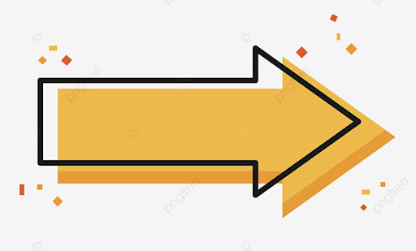

Mi nombre es Breilyn Inoa Guzmán de origen Dominicano actualmente soy
estudiante de Tecnico en informatica, soy un chico muy centrado que he
sabido desarrollarme en la vida, vengo de una familia donde no llueve
mucho el café en el término económico pero rico en amor ,valentía,
tolerancia y fortaleza .
¿Quién soy?
Guzmán a su corta edad hasta el momento a vivido y dedicado su tiempo y
vida a aprender y a invertirlo en cosas productivas que con fe espera
con muchas ancia que en Breilyn Guzmán es un joven que a pasado por
mucho, pero de igual manera muy feliz y orgulloso de donde viene y de
tener unos padres jóvenes como los que tengo mi mama me tuvo a los 16
años de edad y mi papá recién llegaba del campo a la ciudad con tan solo
19 años de edad. un futuro no muy lejano les brinden sus frutos.
¿Quién soy?
He tenido la experiencia y la oportunidad de trabajar como modelo en el
mercado nacional para una Agencia de modelos Italiana la cual se llamaba
INDOVINELLO donde modele para marcas deportivas como la NIKE y LA ADIDAS
bajo la dirección del director Luis Jorge.
¿Quién soy?
Unos de mis grandes logros Educativo fue poder graduarme en el bachiller
como LA MAYOR EXCELENCIA ACADÉMICA ,ya que fue un sueño por el que
trabaje por muchos largos años y no fue nada fácil poder mantenerme como
unos de los mejores Obteniendo cada año del bachiller el premio al
Estudiante Meritorio.
¿Quién soy?
Desde muy temprana edad me he dedicado a los deporte en específico al
Voleibol donde hoy en día pertenezco al Proyecto De Voleibol Regional De
Santiago en representación de la selección juvenil actualmente cat U23 ,
anteriormente jugué por la categoría Infantil sub17 donde logré
colocarme subcampeón del campeonato nacional obteniendo la medalla de
plata y algunos premios individuales, luego de un año jugué por la Cat
Juvenil sub19 donde pude conquistar el Campeonato Nacional obteniendo la
medalla de Oro.
Cosas que me hacen feliz
Cosas que me hacen feliz
Existen muchas cosas que en lo personal me hacen feliz sin embargo
tengo una en especifico y es tener la gracias de Dios al cual le
agradezco inmensamente por brindarme la oportunidad de poder despertar
con salud y poder trabajar dia a dia por mis metas y sueños que me he
propuesto alcanzar , por darme la oportunidad de yo estar donde estoy
hoy en dia y darle salud a mis padres y familiares.
Cosas que me hacen feliz
Me gusta despertar en la mañana sin saber que pasara o aquien voy a
conocer o donde quizás en el transcurso del dia estare.
La vida es un regalo y me gusta aprovechar cada minuto y hora del dia,
nunca se sabe con lo que te puedes encontrar .
Me gusta mantener mi relación amorosa en privado pero no en secreto.
Cosas que me hacen feliz
Como todo joven y ser humano con vida existen otras cosas que de igual
manera pero quizás no tan importante como las primera me hacen feliz.
Como todo joven y ser humano con vida existen otras cosas que de igual
manera pero quizás no tan importante como las primera me hacen feliz.
Cosas que me hacen enojar
Cosas que me hacen enojar
Como persona soy muy responsables de mis actos y me molesta mucho las
personas irresponsables,las personas conformistas,las personas
envidiosas y de malos sentimientos que tratan de herir a los demás con
sus actos y palabras.
Existen diferentes cosas que me irritan bastante entre estos están el
abuso de confianza no soy muy tolerante a eso ni a los niños con
carencia de educación.
Cosas que me hacen enojar
No me gusta que me hablen mentira .
No me gusta el sol.
No me gustan los gatos ,no le hago maldad trato de protegerlo y
respetarlo pero no tengo una relación muy estrecha con ese mamífero
aunque es una subespecie domesticado por su convivencia con nosotros
los seres humanos.
¿Qué me hace único/a?
¿Qué me hace único/a?
Considero que cada unos de los seres humanos tenemos esa cosita que nos
hace diferenciarnos uno del otro, pero si hay algo que específicamente
me hace diferente al resto ,con lo que puedo destacar y obtener éxito en
la vida. Son mis ganas y de demostrarme a mí mismo que no importa de
donde vengo , son mis ganas de sacar mi familia adelante de dar la cara
por cada unos de ellos, ser el orgullo de mis padres y sobre todo una
influencia para los jóvenes del barrios de donde vengo.
¿Qué me hace único/a?
Las ganas de demostrarme a mí mismo que no hay límites en la vida ni
metas que con el permiso de Dios no pueda yo alcanzar, que todo lo que
me proponga lo puedo obtener siempre y cuando trabaje con mucha
gallardía y valentía para lograr aquello que me jure a mi mismo obtener
en el mundo.
Test de Personalidad
Personalidad de Protagonista
Los protagonista somos líderes natos ,llenos de pasión y carisma , esta
personalidad solo las poseemos un 2 por ciento de la población , solemos
ser políticos ,entrenadores, maestro, quienes nos superamos y inspiramos
a los demás a superarse para hacer el bien en el mundo. Con una
confianza natural que genera influencias, las personas que poseemos este
tipo de personalidad sentimos gran orgullo y alegría cuando guiamos a
los demás y trabajamos junto con ellos con el fin de mejorar la
comunidad.
Personalidad de Protagonista
Todo lo que hago se proyecta al exterior, mi postura puede iluminar mi
corazón ,mi aliento puede irradiar amor o ensombrecer mi habitación en
una depresión, mi mirada puede despertar alegría ,mis palabras inspiran
libertad ,cada acto mío puede abrir corazones y mente.
Test de inteligencia multiples
En la siguiente página les mostrare las inteligencias múltiples que como
ser humano yo poseo.

id
Mis virtudes
Metas
Corto plazo
Tengo varias metas a corto plaza unas de ellas es poder completar de
manera exitosa el módulo 1 de Formación humana
Otra es poder recuperarme al 100 de mi lesión en la rodilla.
Entre ellas también están aprender hacer un poco más suelto al
socializar con personas nuevas y dejar de ser tan vergonzoso.
Comenzar hacer unos de los primeros rostros que lleven la voz cantante
mediante las clases que se impartan en el curso de tecnico en
informatica
Aportar mis conocimientos a quienes los necesiten
Sembrar más árboles y mantener la higiene en las calle de mi bello
santiago
Cuidar y proteger los animales huérfanos de la calle.
Mediano plazo
Quiero formar parte de la selección Sub 23 que participará en los
juegos Panamericanos Juveniles en Cali Colombia en enero 2022.
Quiero terminar mi carrera de Tecnico en informatica obteniendo el
titulo que me valide como profesional en el área, realizar el curso
técnico en Diseño gráfico ,conseguir un buen trabajo ,comprarme mi
carro , ayudar más en mi casa económicamente y por último y no menos
importante conseguirme una novia que valore mi amor, mi tiempo y el
gran ser humano que soy.
Largo plazo
Bueno que les digo ,para un futuro tengo tantos planes y metas con las
que siempre he soñado desde niños y conforme el tiempo va pasando he
ido validando y modificando.
Unas de mis metas es tener mi casa propia ,tener la oportunidad de
hacerle su casita a mami bien chula como ella la quiere y como se la
merece ,quiero vivir un tiempo fuera del país precisamente en un país
europeo ,quiero aprender a dominar un idioma extranjero por ejemplo el
italiano me gusta mucho el portugues, el alemán y porque no salir de
la monotonía y de paso aprender lo básico en el idioma Chino..
Largo plazo
China es una cultura que me llama mucho la atención desde el año 2016
Cuando las pupilas de Lang Ping se coronaron Campeonas Olímpicas en
Río 2016 descubrí o más bien desarrolle una curiosidad y un amor por
la cultura china.
Y más que obvio como todo ser Humano quiero tener un Baby
Agradecimiento
Agradezco a Dios por todo lo que he logrado porque sin él nada de esto
hubiese sido posible.
Agradezco a Dios por todo lo que he pasado por todas las pruebas y
situaciones por la que he tenido que pasar, en mi vida e tenido muchas
situaciones difíciles rodeado de personas que me hubiesen podido
ayudar y sin embargo no lo hicieron he estado rodeado de personas
ricas en todo y no me ha dado envidia sino más bien me da la fuerza
para lograr mis metas y tener éxito en la vida.
Agradecimiento
Dios le pone las peores guerras a sus mejores soldados
Ante no entendía el sistema de Dios Porque me pasaban esas cosas a mi
hasta que lo vi y lo tome de otra manera y entendí que Dios me estaba
pasando por el fuego para prepararme porque me faltaba mucho carácter
y personalidad él quería enseñarme que yo era más fuerte de lo que yo
mismo imaginaba.
Es una manera de cómo las cosas que nos suceden en la vida no tan
buenas volverla buenisimas .